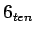
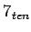
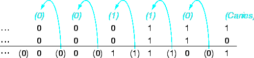
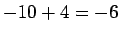
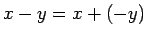

จงบวกค่าไบนารี่  และ  และจากนั้นให้ทำการลบค่า ออกจาก
0000 0000 0000 0000 0000 0000 0000 0111 = 7
+ 0000 0000 0000 0000 0000 0000 0000 0110 = 6
_________________________________________
= 0000 0000 0000 0000 0000 0000 0000 1101 = 13
รูป 3.1 แสดงขั้นตอนการบวก ตัวทดแสดงในวงเล็บ และ ลูกศรแสดงการทด
|

|
ในการลบค่า ออกจาก สามารถทำได้โดยตรงดังนี้
0000 0000 0000 0000 0000 0000 0000 0111 = 7
- 0000 0000 0000 0000 0000 0000 0000 0110 = 6
_________________________________________
= 0000 0000 0000 0000 0000 0000 0000 0001 = 1
ในคอมพิวเตอร์ จะทำการแปลงค่าให้เป็นเลขลบใน 2's และทำการบวกค่าเข้าด้วยกัน
0000 0000 0000 0000 0000 0000 0000 0111 = 7
+ 1111 1111 1111 1111 1111 1111 1111 1010 = -6
_________________________________________
= 0000 0000 0000 0000 0000 0000 0000 0001 = 1
การ Overflow จะเกิดขึ้นเมื่อขนาดรีจีสเตอร์ในฮาร์ดแวร์ไม่เพียงพอที่จะเก็บค่าของตัวแปรที่ได้จากการคำนวณ คำถามที่ตามมาได้แก่ ``ในกรณีใดที่สามารถเกิด overflow ได้'' ในการบวกเลขที่มีเครื่องหมายต่างกันนั้นไม่สามารถเกิด overflow ได้เนื่องจากค่าที่ได้จะมีค่าน้อยกว่าตัวกระทำตัวหนึ่งเสมอ จึงไม่เกิดการ overflow เช่น  ค่าผลลัพธ์จะมีค่าน้อยกว่าตัวกระทำ และสามารถอยู่ในย่านแสดงค่าของ 32 บิตได้
ในกรณีของการลบ เงื่อนไขการเกิด Overflow จะตรงข้ามกับการบวก ถ้าตัวกระทำมีเครื่องหมายเหมือนกัน จะไม่เกิด Overflow สามารถสังเกตได้จากสมการ 
กรณีของ Overflow จะเกิดเมื่อมีการบวกหรือลบของไบนารี่ขนาด 32 บิต แล้ว ผลลัพธ์ต้องการพื้นที่ขนาด 33 บิตในการแสดงค่า การเกิด Overflow จะส่งผลให้บิต 32 ที่เป็น Sign bit ถูกตั้งให้เป็นค่าของตัวแปร และบิต 33 เป็นค่า Sign bit หรือเกิดการทดเลข เข้าไปยัง Sign Bit
การเกิด Overflow จะเกิดในการลบเมื่อทำการลบค่าตัวเลขลบออกจากตัวเลขบวก และได้ผลลัพธ์เป็นค่าเลขลบ หรือเมื่อทำการลบค่าตัวเลขบวกออกจากค่าเลขลบ และได้ผลลัพธ์เป็นบวก ซึ่งเป็นการยืมค่ามาจาก Sign Bit รูป 3.2 แสดงกรณีต่างๆ ที่จะเกิด Overflow ในการบวกลบเลข
ในหลายกรณี ระบบซอฟต์แวร์และฮาร์ดแวร์ ไม่ดำเนินการใดๆ เมื่อเกิด Overflow ขึ้น เช่น การคำนวณตำแหน่งแอดเดรสในหน่วยความจำ และการคำนวณ ในภาษา C ซึ่งต่างจากภาษา Fortran ที่มีการจัดการกับเครื่องหมาย และ Overflow ตามความเหมาะสม สำหรับการคำนวณดังกล่าวคอมพิวเตอร์ MIPS มีคำสั่งสำหรับการคำนวณตัวเลขที่พิจารณาเครื่องหมายดังต่อไปนี้
ในกรณีที่คอมพิวเตอร์ MIPS ตรวจสอบพบ Overflow ที่ต้องสร้าง Exception หรือบางครั้งเรียกว่า Interrupt Exception หรือ Interrupt เป็นการเรียกฟังก์ชั่นที่ไม่ได้มีการเตรียมการตามการทำงานของโปรแกรม ตำแหน่งของคำสั่งที่ก่อให้เกิด Overflow จะถูกเก็บไว้ในรีจีสเตอร์ และคอมพิวเตอร์จะทำการกระโดดการทำงานไปยังตำแหน่งที่ถูกกำหนดไว้สำหรับการจัดการกับ Exception หรือ Interrupt นั้นๆ ในคอมพิวเตอร์ MIPS มี Exception Program Counter (EPC) สำหรับเก็บแอดเดรสของคำสั่งที่ก่อให้เกิด Exception
การที่จะตรวจจับ Overflow คอมพิวเตอร์ MIPS สามารถทำได้จากชุดคำสั่งดังต่อไปนี้
addu $t0, $t1, $t2 # $t0 = sum, but don't trap
xor $t3, $t1, $t2 # check if signs differ
slt $t3, $t3, $zero # $t3 = 1 if sign differ
bne $t3, $zero, No_overflow # $t1, $t2 sign !=, so no overflow
xor $t3, $t0, $t1 # signs =; sign of sum match too?
# $t3 negative if sum sign different
slt $t3, $t3, $zero # $t3 = 1 if sum sign different
bne $t3, $zero, Overflow # All three signs !=; go to overflow
สำหรับการบวกแบบไม่พิจารณาเครื่องหมายสามารถตรวจจับ Overflow ได้โดย
addu $t0, $t1, $t2 # $t0 = sum
nor $t3, $t1, $zero # $t3 = NOT $t1
# (2's comp - 1: 2^32 - $t1 -1)
sltu $t3, $t3, $t2 # (2^32 - $t1 -1) < $t2
bne $t3, $zero, overflow # if (2^32 - 1 < $t1 +$t2) go to overflow